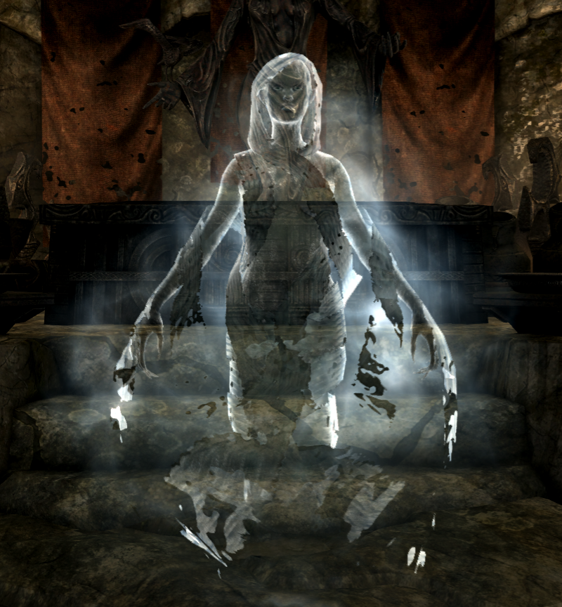
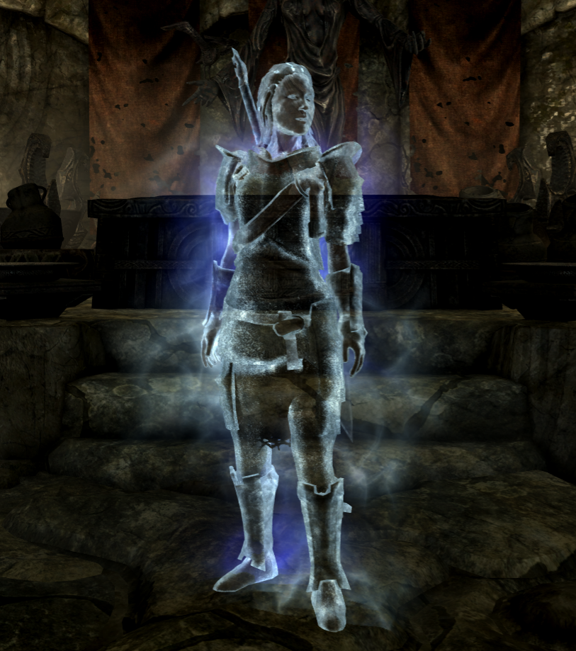
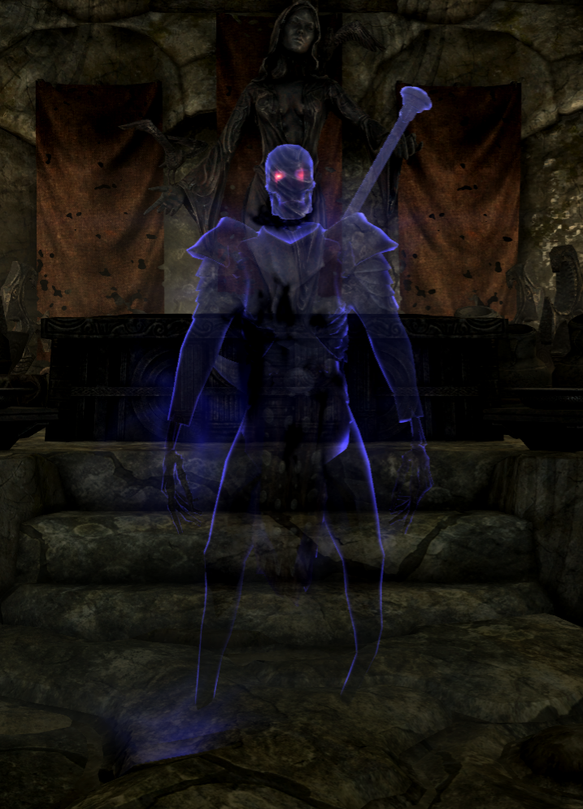
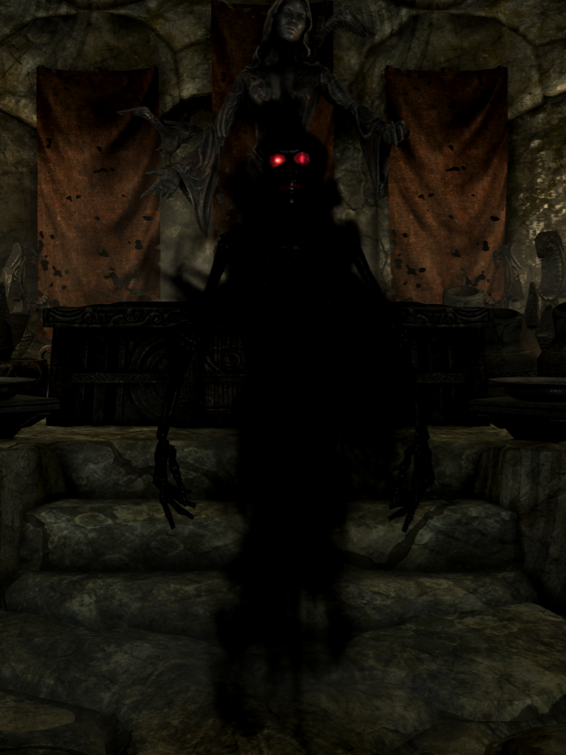
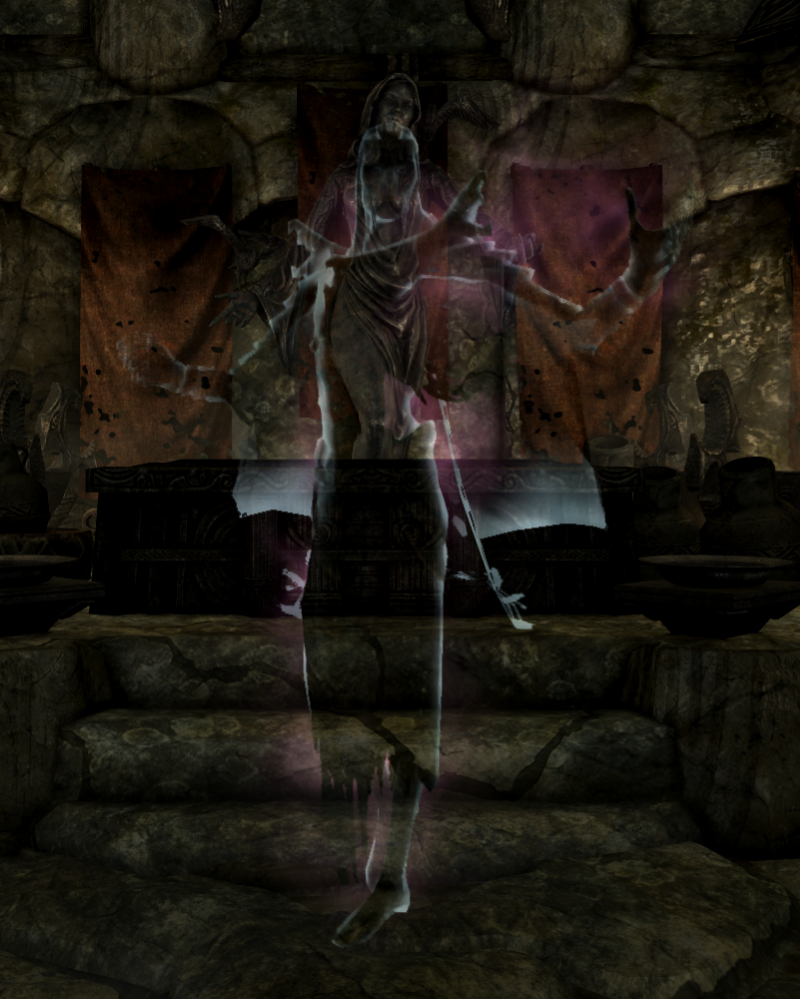

Lost Spells
(Originally posted on 27.06.2019)
Conjure Snow Wolf
Summons a Snow Wolf for 30 seconds.
School: Conjuration, Skill level: Novice, Default Magicka cost: 107
Affected by Perks: Novice Conjuration, Summoner 1 & 2, Twin Souls
Conjure Snowy Sabre Cat
Summons a Snowy Sabre Cat for 30 seconds.
School: Conjuration, Skill level: Apprentice, Default Magicka cost: 179
Affected by Perks: Apprentice Conjuration, Summoner 1 & 2, Twin Souls
Conjure Snow Bear
Summons a Snow Bear for 30 seconds.
School: Conjuration, Skill level: Adept, Default Magicka cost: 240
Affected by Perks: Adept Conjuration, Summoner 1 & 2, Twin Souls
Conjure Winter's Widow

Summons a Winter's Widow for 60 seconds. Winter's Widow's are undead creatures which damage their opponents from a distance with Ice Spikes and with Arcane Frost in close combat.
School: Conjuration, Skill level: Adept, Default Magicka cost: 179
Affected by Perks: Adept Conjuration, Summoner 1 & 2, Necromancy, Twin Souls
Winter’s Widow
Health 210, Magicka 250
Resist Magic 25%, Resist Frost 100%
No melee attack
Spells:
Ice Spike
Constant Effects:
Arcane Frost Cloak which deals 8 frost damage which bypasses Frost Resist effects.
Has Perks: Augmented Frost 1
Conjure Winter's Warrior

Summons a Winter's Warrior for 60 seconds. Winter's Warrior's are aggressive undead melee fighters which are especially deadly against mages. They are highly resistant to magical attacks and their melee attack deplete the Magicka of their opponents.
School: Conjuration, Skill level: Adept, Default Magicka cost: 225
Affected by Perks: Adept Conjuration, Summoner 1 & 2, Necromancy, Twin Souls
Winter’s Warrior
Health 210, Stamina 230
Resist Frost 25%, Resist Magic 75%
Melee Attack per Hit
Deals ~30 base damage + 10 Frost damage
50 Magicka damage
Conjure Spectre

Summons a Spectre for 60 seconds. These undead melee warriors carry two handed hammers which bring fear to their opponent's hearts.
School: Conjuration, Skill level: Expert, Default Magicka cost: 310
Affected by Perks: Adept Conjuration, Summoner 1 & 2, Necromancy, Twin Souls
Spectre
Health 440, Stamina 350
Resist Shock 25%, Resist Frost 50%
Melee Attack per Hit
Deals ~40 damage
Attacks have fear effect on creatures and animals below level 25 for 15 seconds.
Conjure Wraith

Summons a Wraith for 60 seconds. Fast and durable undead creatures whose attacks causes their opponents - even other undead - to turn on each other.
School: Conjuration, Skill level: Expert, Default Magicka cost: 315
Affected by Perks: Adept Conjuration, Summoner 1 & 2, Necromancy, Twin Souls
Wraith
Health 480, Stamina 250
Resist Fire 25%, Resist Frost 50%
Melee Attack per Hit
Deals ~40 damage
Attacks have frenzy effect on animals, creatures and undead below level 25.
1,3 times faster than regular undead
Conjure Dread

Summons a Dread for 60 seconds. These undead beings reanimate all dead around to fight on their side.
School: Conjuration, Skill level: Master, Default Magicka cost: 1150
Affected by Perks: Master Conjuration, Summoner 1 & 2, Necromancy, Twin Souls
Dread
Health 1020, Magicka 740
Spells:
Ritual Spell
Raises all undead nearby to fight on your side.
Arcane Frost Cloak
Deals 8 frost damage which bypasses Frost Resist effects.
Has Perks: Magic Resistance, Mage Armor 1 & 2, Recovery 1 & 2, Respite, Regeneration, Necromancy
Winterwind's Chill
Equal to Unrelenting Force shout with one Dragon soul and deals 15 frost damage.
School: Destruction, Skill level: Apprentice, Default Magicka cost: 89
Affected by Perks: Augmented Frost 1 & 2, Deep Freeze
Winterwind's Bite
Equal to Unrelenting Force shout with two Dragon souls and deals 25 frost damage.
School: Destruction, Skill level: Adept, Default Magicka cost: 134
Affected by Perks: Augmented Frost 1 & 2, Deep Freeze
Unrelenting Frost
Almost equal to full Unrelenting Force shout and deals 30 frost damage.
School: Destruction, Skill level: Expert, Default Magicka cost: 315
Affected by Perks: Augmented Frost 1 & 2, Deep Freeze
Winter's Grasp
Deals 30 frost damage per second. Bypassess all Resist Frost effects.
School: Destruction, Skill level: Adept, Default Magicka cost: 71/s
Affected by Perks: Augmented Frost 1 & 2
Terror
Creatures up to level 15 will flee from combat for 15 seconds and attack anything nearby for 30 seconds. Deals 25 frost damage.
School: Illusion, Skill level: Adept, Default Magicka cost: 198
Affected by Perks: Augmented Frost 1 & 2, Aspect of Terror, Rage, Master of the Mind
Spell Table
| Spell |
School |
Level |
Casting Cost |
Tome Value |
| Conjure Snow Wolf |
Conjuration |
Novice |
107 |
150 |
| Conjure Snowy Sabre Cat |
Conjuration |
Apprentice |
179 |
300 |
| Conjure Snow Bear |
Conjuration |
Adept |
240 |
500 |
| Conjure Winter's Widow |
Conjuration |
Adept |
179 |
500 |
| Conjure Winter's Warrior |
Conjuration |
Adept |
225 |
500 |
| Conjure Spectre |
Conjuration |
Expert |
310 |
850 |
| Conjure Wraith |
Conjuration |
Expert |
315 |
750 |
| Conjure Dread |
Conjuration |
Master |
1150 |
3000 |
| Winterwind's Chill |
Destruction |
Apprentice |
89 |
250 |
| Winterwind's Bite |
Destruction |
Adept |
134 |
500 |
| Unrelenting Frost |
Destruction |
Expert |
315 |
750 |
| Winter's Grasp |
Destruction |
Adept |
71/s |
500 |
| Terror |
Illusion |
Adept |
198 |
500 |